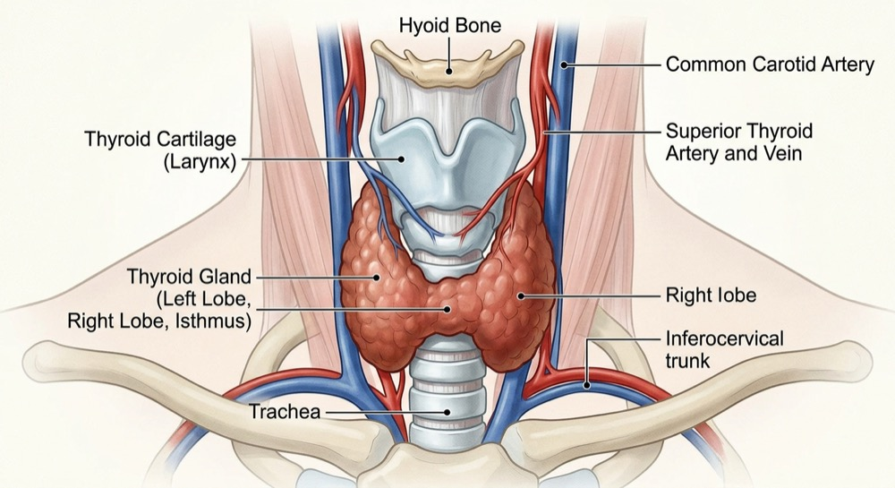

Uithoorn · 5 Nov 2024
Women's Health and Hormonal Balance
A talk on women's health and hormonal balance, organised with local community partners.
Sharing knowledge with the community, and with fellow homeopaths.
Informative evenings and afternoons for the local community.
A talk on women's health and hormonal balance, organised with local community partners.
An encouraging session about the menopause as a new phase of life.
These talks are for general information and are not a substitute for medical advice.

A session on veterinary homeopathy and the role of mother tinctures in a homeopathic practice.